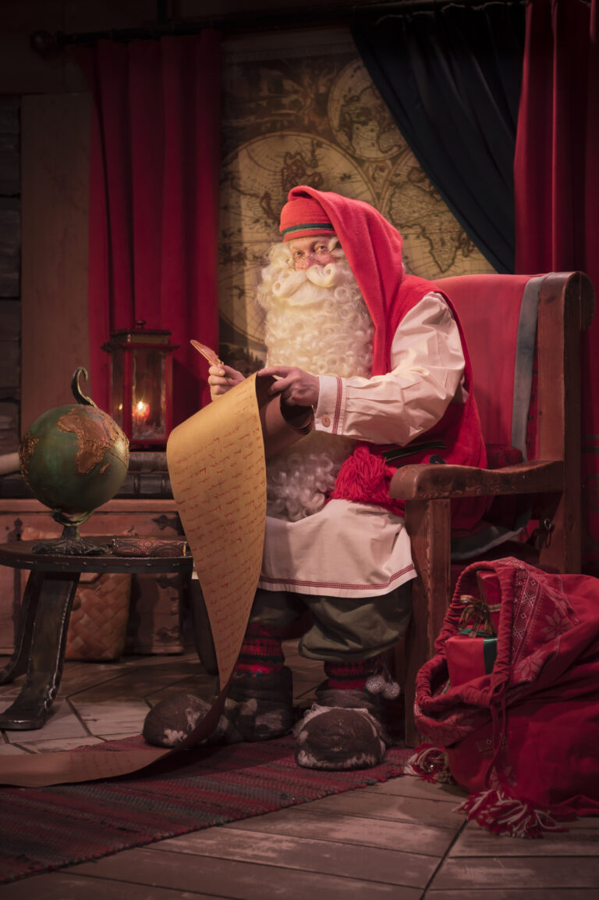
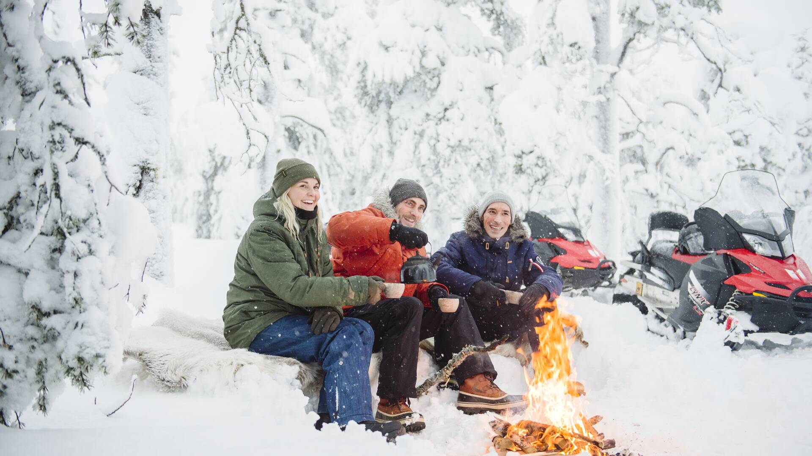
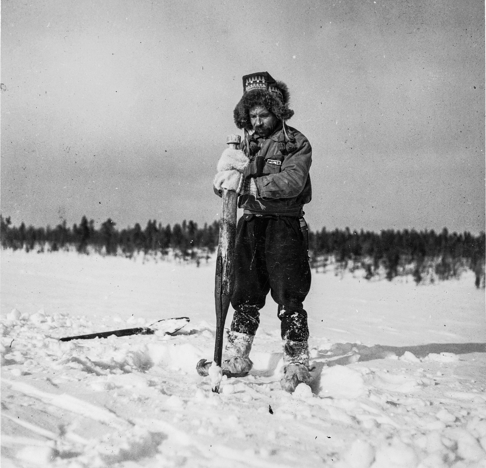
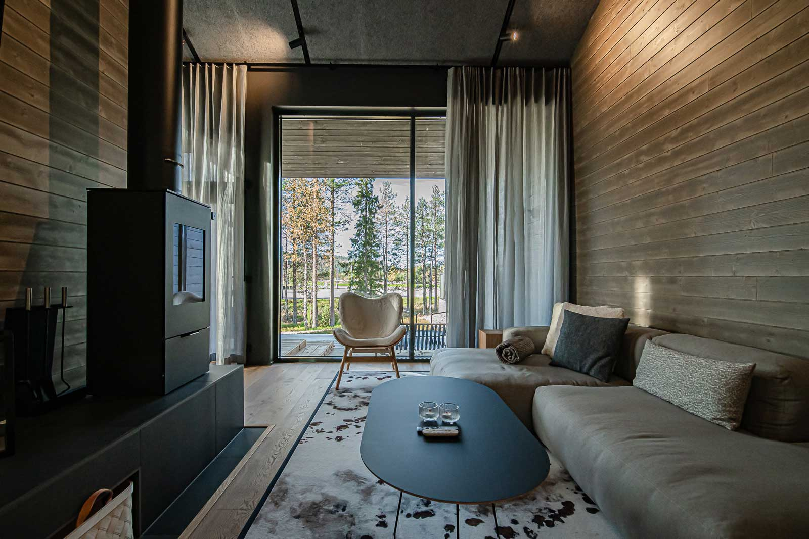

Private Finland
Bespoke Nordic Journeys — Curated for the Few
Bespoke Nordic Journeys — Curated for the Few
In Finnish Lapland, the sky becomes part of the room. Glass-roofed private cabins frame the aurora borealis from your bed — no alarm clocks, no tour groups, no scheduled moments. The lights appear when they choose, and when they do, the entire sky is yours.
Winter in Lapland is the world's most immersive natural spectacle. Deep snow silences everything. Reindeer cross the fell at dusk. The air is the cleanest you have ever breathed. Each cabin is a private world set within endless white wilderness.
This is not a hotel. It is a destination with no equal.

Every experience arranged privately — no shared groups, no fixed schedules








For travellers who require complete privacy, Finland offers a collection of exclusive private residences that cannot be found through any booking platform. These are homes, not hotels — staffed, fully catered, and designed to disappear into the landscape.
Private Villas — Architect-designed residences set in their own wilderness. Private chef, private sauna, private guide. The fell, the forest, and the aurora belong entirely to your party.
Boutique Lodges — Intimate lodges with a handful of suites, offering the service of a private residence with the amenities of a world-class property. Your programme. Your pace. Your Finland.
We know Finland. We know hospitality.
Finland DMC is a specialist destination management company covering all of Finland — from the glass-cabin wilderness of Lapland and the seal-inhabited lakes of Saimaa to the design capital Helsinki. We arrange the experiences that no booking engine can offer.
Every journey we design is entirely private, entirely bespoke, and built around one principle: the best of Finland should be accessible only to those who know exactly where to look. We know where to look.
No group tours. No fixed programmes. No limits.